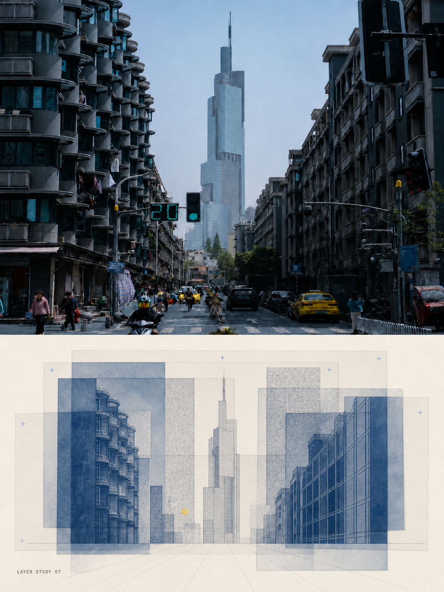
S01
中等Blue Exposure Laboratory
建筑、街道、层叠立面，以及强调蓝晒曝光和明暗深度的场景。
R-S01-A · split study
默认由 AI 根据原图语义选择一个风格并生成完整全图。点击卡片可打开完整参考图；分屏样图在卡片中只聚焦下半设计区。参考图仅供浏览，不参与生图输入。
选择后告诉 AI 风格编号 S01–S11。其他风格默认仍生成完整全图；需要上下 1:1 时请明确说明。

Blue Exposure Laboratory
建筑、街道、层叠立面，以及强调蓝晒曝光和明暗深度的场景。
R-S01-A · split study
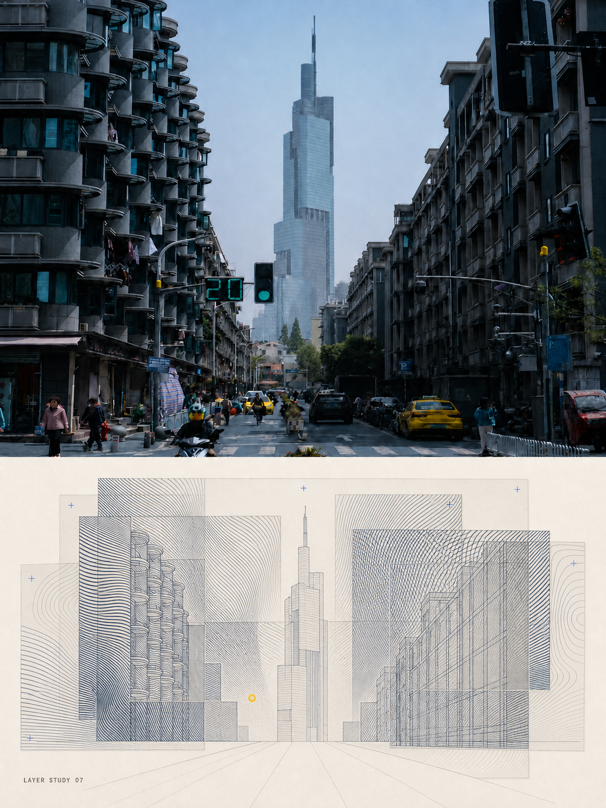
Optical Field Array
强透视、重复线条、道路、曲线、线缆与明确结构节奏。
R-S02-A · split study
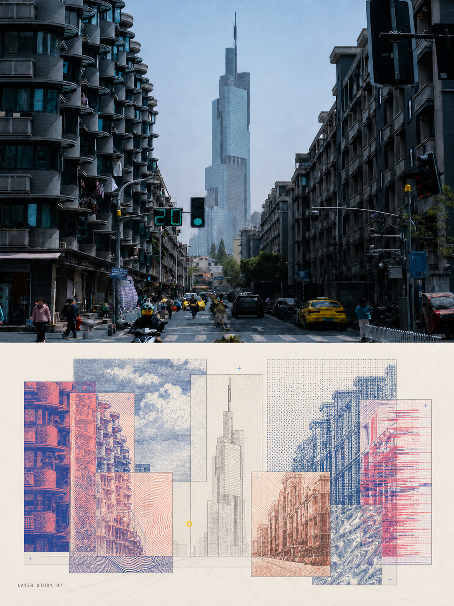
EdgeLoom Effect Sampler
细节异质、实验编辑感强，需要多种局部印刷质感的图像。
R-S03-A · split study
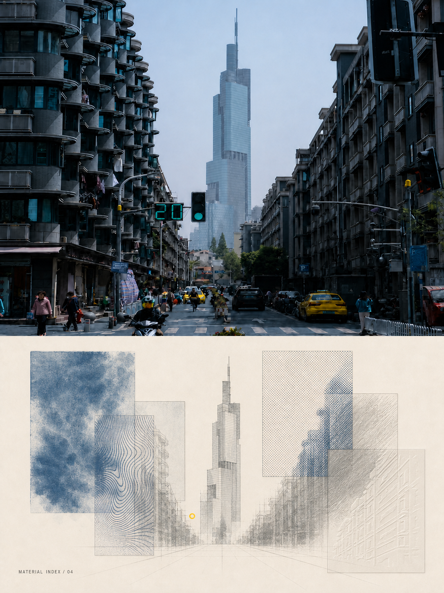
Quiet Effect Cabinet
简单或孤立主体、材料研究、留白充足且希望更安静克制。
R-S04-A · split study
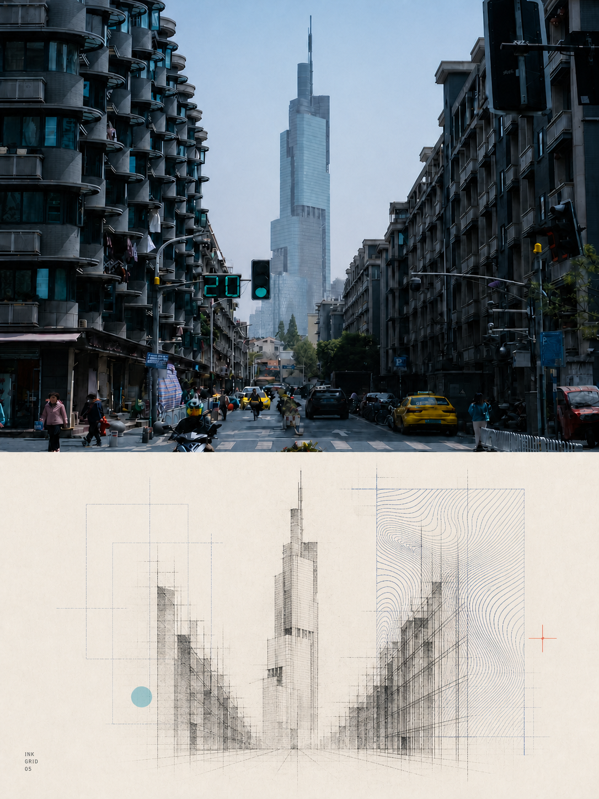
Ink Grid Interference
清晰人造几何、网格、建筑立面和一个主导干涉区。
R-S05-A · split study
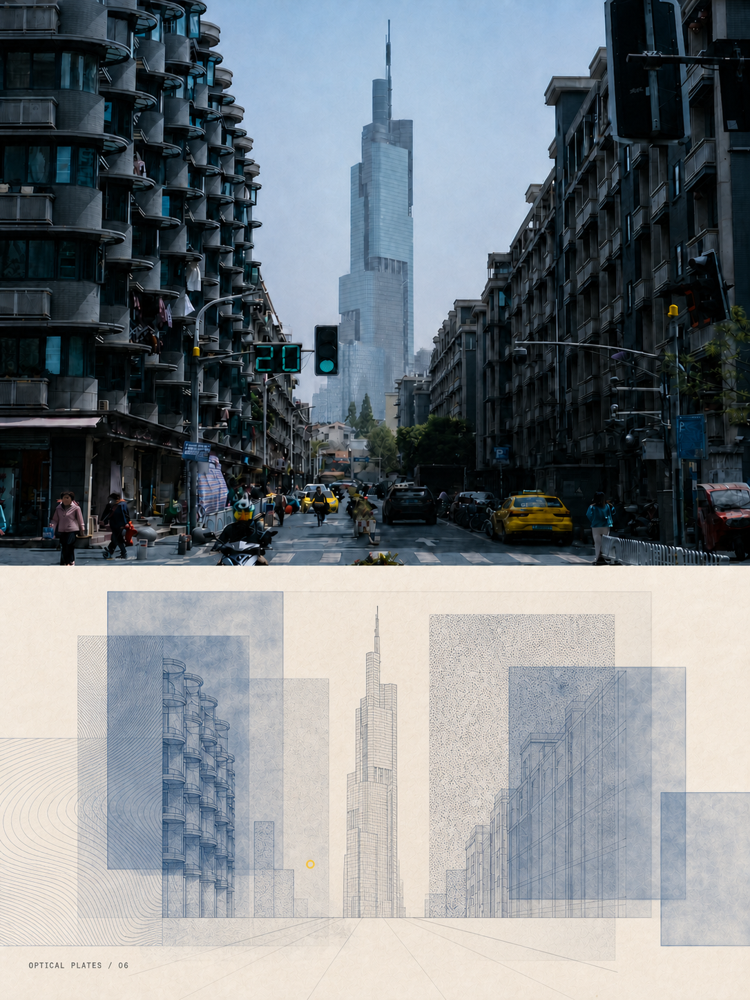
Cyanotype Optical Plates
层叠建筑、非对称蓝晒板、透明叠压与蓝色调深度。
R-S06-A · split study
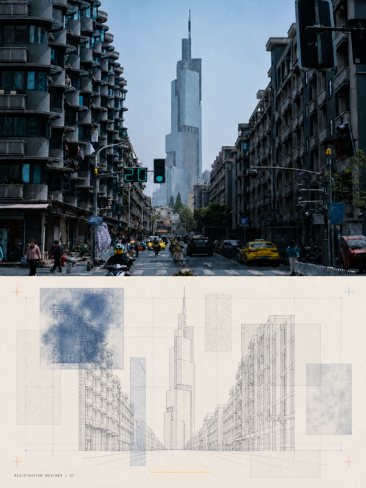
Registration Weather
雾、雨、云、薄霾、变化光线或氛围本身是主要内容。
R-S07-A · split study
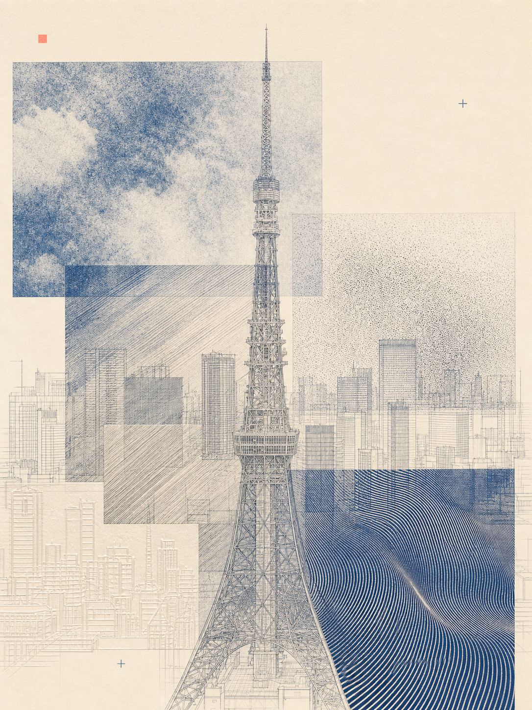
Material Tectonics
主体结构明确且存在多种表面、材料或结构层次；通用默认。
R-S08-A · full design · exact 3:4
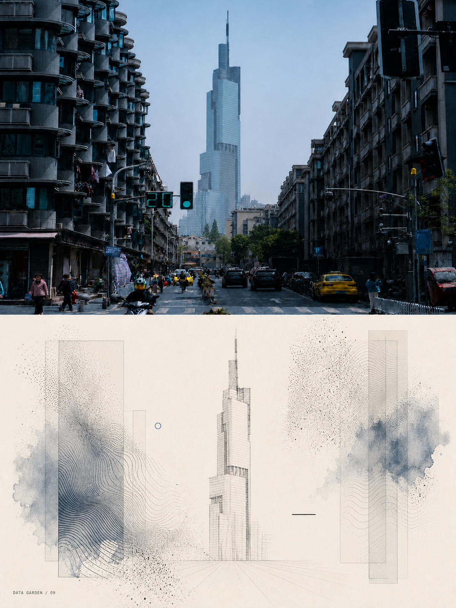
Monochrome Data Garden
植物、有机生长、风、粒子、柔和运动和近单色表达。
R-S09-A · split study
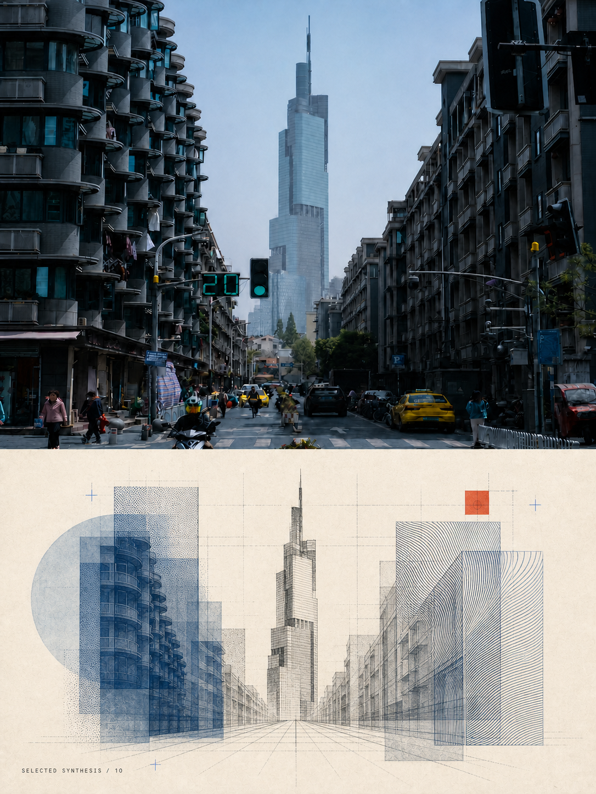
Selected Synthesis
画面同时存在有机曲线与明确的直线、建筑或网格结构。
R-S10-A · split study
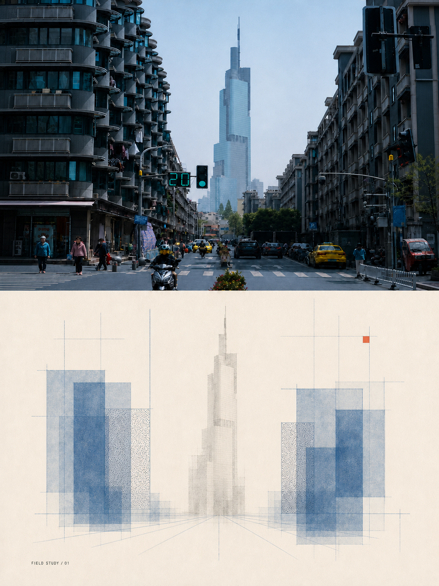
Cyanotype Ma Registry
居中或对称单体、边缘安静、空间留白和克制蓝晒。
R-S11-A · split study
{kind=link}